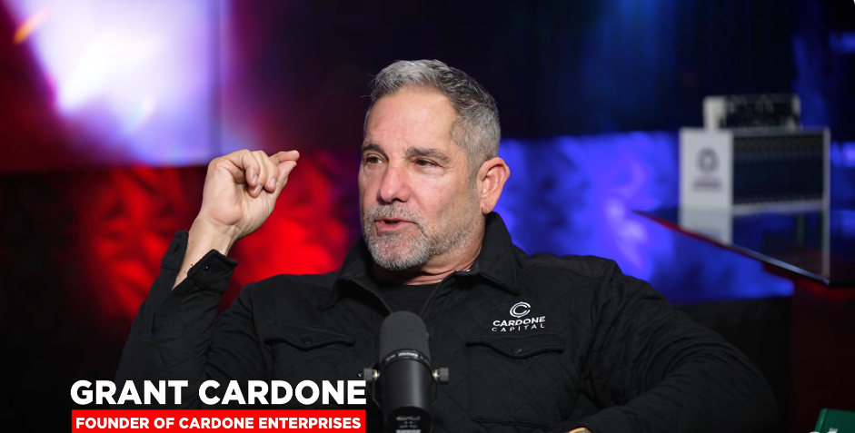

Leo Lab · 文章
亿万富翁 Grant Cardone 把婚姻排在金钱前面
真正拉开差距的，是你和谁一起过日子
前段时间看 Grant Cardone 和女儿聊天，写了一篇文章《亿万富翁 Grant Cardone：人到中年，管好这 3 个账户，才有选择生活的底气》。我觉得有必要把这些观点拎出来再认真聊透一点。
女儿问他：如果只能留三条人生建议，最希望她记住什么？Grant 没有先讲努力，也没有先讲赚钱。他先说了一句：Marry the right person。第一条就是选对伴侣。后面才是不要有太多朋友，以及一定要理解钱。

我一开始有点意外。一个把销售、注意力、财富常常挂在嘴边的人，为什么把伴侣放在钱前面？后面我仔细想了想，这个排序不一定是在说婚姻比赚钱高尚，而是在说一件更现实的事：
财富能不能留下来，风险来了你能不能扛得住，很多时候都不只取决于你一个人。
一、真正的伴侣不仅仅是「支持你的人」，而是和你一起承担后果的人
年轻的时候，我们说起伴侣，容易先想到喜欢不喜欢、聊不聊得来、性格合不合。这些当然重要。
可工作几年、创业几年以后，生活会慢慢露出另一面：从浪漫激情变成了日常的房租房贷、孩子教育、父母生病、工作变化、一次想做的事情但不一定能成的尝试。每一件单独看，都像是小事。可它们会一笔一笔地记在同一个家庭账户里。
你想换一份收入暂时低一点、但未来更有积累的工作；对方却觉得你不能冒险。你想拿一部分钱去验证一个项目；对方却担心现金流断了。你这边正在熬一个困难周期，对方也许能和你一起把日子过得更紧一点，也许会让每一次讨论都变成互相消耗。
这不是谁对谁错。只是两个人绑定久了，彼此的风险偏好、花钱方式、处理冲突的方法，会变成同一个系统的底层代码。系统跑得顺不顺，不是看顺风的时候多甜，而是看逆风的时候，能不能一起把事情说清楚。
所以我越来越觉得，伴侣不是「支持我梦想的人」。这个说法有点像把对方变成观众。更准确一点说，是你们能不能成为彼此的合伙人：知道共同要守住什么，也知道什么风险可以小步去尝试。
二、真正消耗人的，往往不是一次大吵，是长期的小分歧
很多关系不是坏在一件惊天动地的大事上，而是坏在长期、重复、没有被处理的小分歧里。
一个人觉得钱要花在体验上，另一个人觉得一定要先留足安全垫；一个人习惯遇到问题先讨论，另一个人习惯冷下来、拖过去；一个人想用周末做点自己的项目，另一个人觉得那是在逃避家庭责任。
刚开始这些都不算大事。可如果同一类问题每个月都发生，三年、五年以后，它们就不只是情绪问题了，会慢慢影响两个人的时间、判断、金钱和在一起的勇气。
这也是为什么我不太认同「找一个完全懂你的人」这句话，这不现实，没有谁会无缘无故地去懂你。没有谁能把另一个人所有的想法都提前懂透。真正重要的，是不懂的时候，愿不愿意坐下来商量，能不能把规则重新谈一遍，是否愿意用对方能理解的话耐心地聊一聊。
比如，家里每个月必须留多少安全垫？一笔超过多少钱的支出或投资要一起讨论决定？一个人想做第二现金流实验，能够容忍最多可以投入多少时间、多少本金，多久没有结果？这些话题听起来有点不那么浪漫，确实也很现实。
可婚姻到了需要一起扛事的阶段，很多浪漫反而藏在这些具体的地方：我知道你担心什么；你也知道我不愿意放弃什么；我们不靠猜，提前就能把边界说出来。
三、第二现金流，不能建立在家庭失序上
这些年，很多人一聊到副业、聊到转型、聊到创业的时候，容易把它讲成一个人的孤勇故事。好像只要对自己足够狠、足够拼、肯熬夜，就能把路闯出来一样。
可对多数工作多年的中年人来说，现实往往不是这样的。我们身后有家庭，有固定支出，有老人有孩子，也有另一个人的情绪和安全感。你想做第二现金流，不是不能试，而是不能把一家人的稳定，拿去换自己一时的热血。
这也是我现在越来越看重「风险边界」的原因。不是每个项目都要一家人一起干，但重要决定至少应该让对方知道：你准备试什么，最坏的结果会亏多少，多久复盘一次，什么情况下及时止损。
23 年当我决定把公司业务停掉的时候，虽然也投资参与了几个小项目，但是投资亏损基本都在我的可控范围之内，哪怕最后亏了，也不影响家庭的生活。
有了边界，尝试反而更能走远。因为你不是把全家推到牌桌上下注，而是在一个能承受的范围里，慢慢给自己多铺一条管道。
四、选对伴侣，不仅仅是一次选择，是长期一起建设
所以我现在理解 Grant 那句「选对伴侣」，不只是结婚前该怎么挑人。对已经在关系里的人来说，更重要的是：你们有没有把彼此当作长期共同体来经营。
有没有能力一起面对坏消息；能不能把钱、时间、父母、孩子和未来说得清楚一些；一方想往前奔跑的时候，另一方能不能不是盲目反对，也不是盲目支持，而是一起把风险这笔账算明白，做到心中有数。
这才是婚姻关系真正的复利。它不一定让你立刻赚更多钱，却会让你在关键的转弯处，不必一个人硬扛，也不会因为彼此拉扯，把本来可以积累的东西都磨损掉。